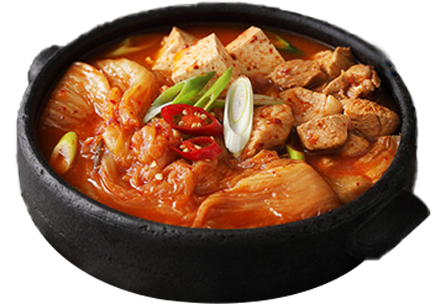

구이류
삼겹살, 갈비, 닭구이 등과 같은
구이류는 증류주와 아주 잘
어울립니다. 증류주의 강한 맛이
구이의 기름진 맛과 잘 조화되어
입맛을 돋우고 기름진 맛을
중화시켜줍니다.
김치찌개
강한 맛의 증류주는 김치찌개나
된장찌개와 같은 국물 요리와 잘
어울립니다. 증류주가 국물 요리의
맛을 한층 더 깊고 풍부하게 만들어
줍니다.

안주류
짭짤하고 강한 맛의 안주류, 예를
들어 젓갈, 멸치볶음 등은 증류주와
함께 하면 그 맛이 더욱 살아납니다.
강한 술 맛을 중화시키면서도 각자의
맛을 즐길 수 있게 해줍니다